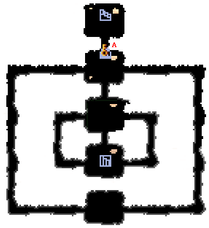
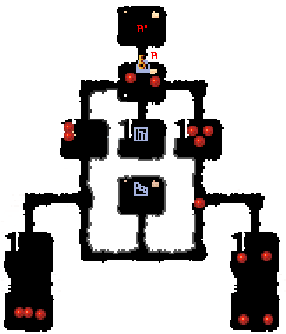
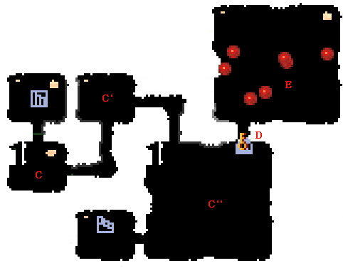
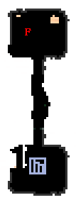

|  | |
| A | A地点の扉を開くには、フロア上にあるタルの数を入力しなければなりません。 間違えると、部屋にたくさん爆弾がまかれるので注意しましょう。答え=20 |
|  | |
| B | B地点の扉を開くには、フロアにいるこぼるとの数を入力せねばなりません。答え=15 マップに移動したらすぐに、表示されている敵の数を数えれば問題ありません。 ただし、間違えると部屋に大量のダイナマイトがまかれます。すぐに逃げないと、おそらく即死です。 ちなみに、B'地点にはエンジンが落ちています。 |
|  | |
| C | C、C'、C''地点にはトゲがたくさん動いています。 危ないです。 |
| D | D地点の扉を開くには、フロアにあるトゲの数を入力しなければなりません。 ただし、間違えると同じ部屋に大量の爆弾がまかれます。 トゲも危ないのですが、爆弾もかなりきけんです。答え=24 |
| E | E地点のコボルトを全て倒すと、コボルタンがあらわれます。 そして、コボルタンを倒した後、2週目ならば・・・コボルタンXが出てきます。 |
|  | |
| F | F地点にはプロペラが落ちています。 何に使うかは、考えてみてください。 |